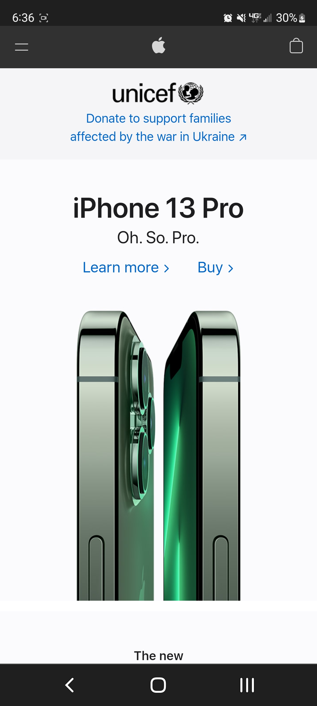
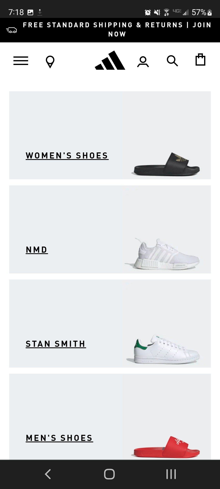

Design Principles Document
Jaxon Vocana

The home page of apple's website uses visual hierarchy to convey a message. The biggest thing you see is the new iPhone. It's also the first thing you see. All other things on the homepage are smaller and take up less visual space. It is also interesting to see how the most expensive iPhone is center aligned and the cheaper iphone below it is aligned to the right. This could be the rule of thirds but I think it makes sure that the flagship iPhone is center stage and center of attention.
The Dark header and footer puts all of the attention on the skis. The white background also contributes to this because it makes it really easy to see all the details of the ski. The font for the headings and descriptions also don't stand out so the skis are the foreground. The call to action button is also really bright. This keeps the attention on the skis and a chat feature to help customers.

Throughout all of Adidas' website, they give all elements plenty of space to breath. Every category has space around it. Each category picture has space above it giving it the effect of the shoes being on the ground. Giving everything enough white space makes this website more approachable. Adidas has a lot of content on their site. Having enough white space gives the site organization.